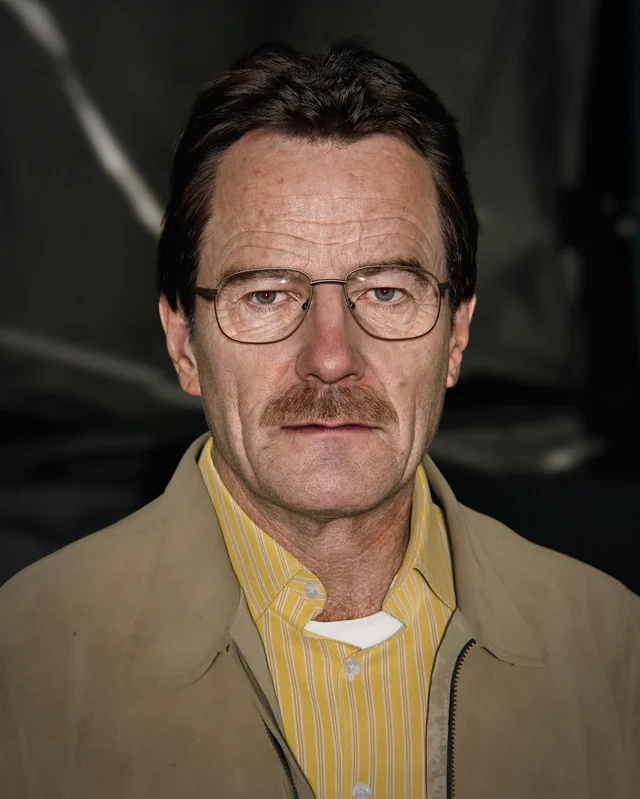
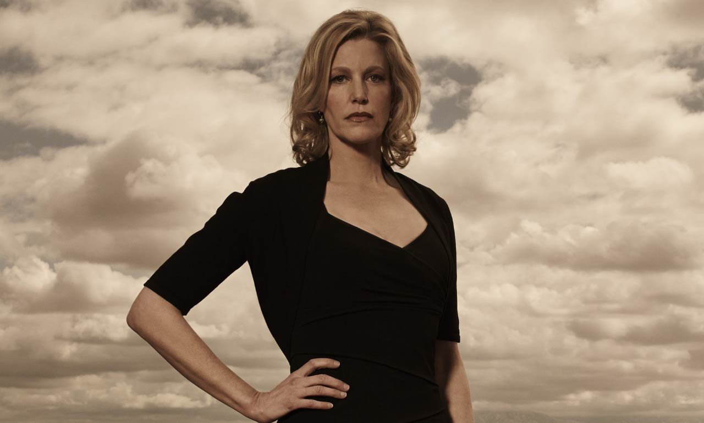
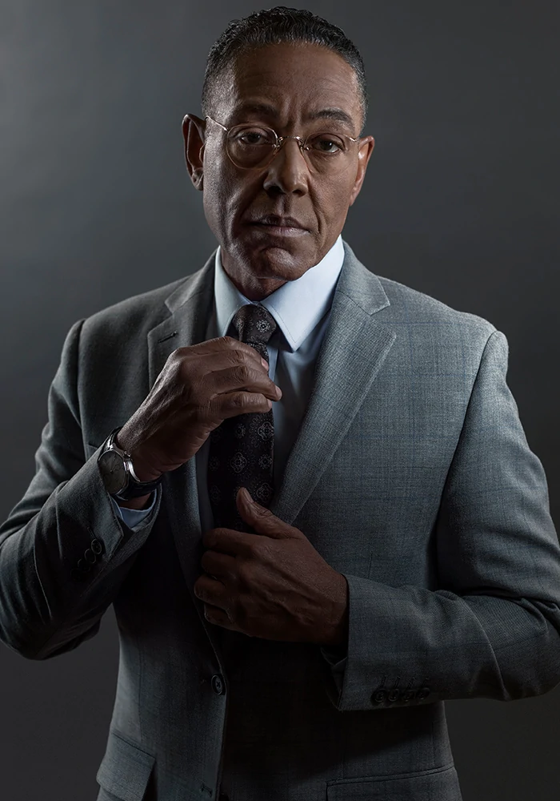

Breaking Bad es una serie de televisión estadounidense que se
emitió entre 2008 y 2013, creada y producida por Vince Gilligan. Narra
la historia de Walter White (Bryan Cranston), un profesor de química con
problemas económicos a quien le diagnostican un cáncer de pulmón
inoperable. Para pagar su tratamiento y asegurar el futuro económico de
su familia, comienza a cocinar y vender metanfetamina junto con Jesse
Pinkman (Aaron Paul), un antiguo alumno suyo. La serie, ambientada y
producida en Albuquerque (Nuevo México), se caracteriza por sus escenarios
desérticos y por la tendencia en la historia de poner a sus personajes en
situaciones que aparentemente no tienen salida, lo que llevó a que su
creador la describa como un wéstern contemporáneo.
Antecedentes
Breaking Bad fue creada por Vince Gilligan, quien previamente
había trabajado como guionista en la serie The X Files, de Fox. Gilligan
quería crear una serie en la que el protagonista se convirtiera en el
antagonista. En una entrevista, dijo: «Históricamente, en la televisión
los guionistas se esfuerzan por mantener a los personajes siempre iguales
durante años o incluso décadas. Cuando noté esto, el siguiente paso lógico
era pensar en cómo podría hacer un programa cuyo principal tema fuese el
cambio». Añadió que su objetivo era transformar a Walter White de un Mr.
Chips a un Scarface. El concepto surgió durante una conversación entre
Gilligan y su colega guionista Thomas Schnauz, quienes, bromeando, dijeron
que si se quedasen sin trabajo, la solución sería «armar un laboratorio de
metanfetamina dentro de un vehículo de recreación e ir por todo el país
cocinando cristales y ganando dinero».
Capítulos importantes
Walter White

Walter White es un profesor de química que, tras ser diagnosticado con
cáncer, decide fabricar metanfetamina para asegurar el bienestar económico
de su familia. Su transformación a lo largo de la serie es profunda y
dramática.
Jesse Pinkman
Jesse Pinkman es un ex alumno de Walter White que se convierte en su socio
en la fabricación de metanfetamina. Su carácter evoluciona desde un joven
problemático hasta un personaje complejo y con mucha profundidad emocional.
Skyler White

Esposa de Walter White, quien enfrenta grandes dilemas morales y personales
a medida que descubre las actividades ilegales de su esposo.
Hank Schrader
Agente de la DEA y cuñado de Walter White, dedicado a luchar contra el
narcotráfico sin saber inicialmente la identidad de Heisenberg.
Saúl Goodman
Abogado criminalista que actúa como el asesor legal y representante de
Walter y Jesse, conocido por su estilo poco ortodoxo y humorístico pero efectivo.
Gustavo Fring

Propietario de la cadena de restaurantes Los Pollos Hermanos, Gustavo Fring es uno de los mayores narcotraficantes del suroeste de los Estados Unidos. Su carácter meticuloso y reservado lo convierte en alguien a quien temer.
Mike Ehrmantraut
Ex policía convertido en solucionador de problemas para Gus Fring. Mike es experto en vigilancia, inteligencia y operaciones encubiertas. Tiene un fuerte código moral, aunque trabaja en el mundo criminal.
Walter Jr.
Hijo de Walter y Skyler White. Vive con parálisis cerebral, pero es un joven optimista, leal y que idolatra a su padre, sin conocer su doble vida como narcotraficante.
Hugo Zetina Luna
Correo: 187471@upslp.edu.mx
Matricula 187471
¿Dónde ver Breaking Bad?
Puedes ver Breaking Bad en
Netflix.
La serie está disponible para streaming en calidad HD, doblada y subtitulada en varios idiomas.
Better Call Saul
Better Call Saul es una serie derivada (spin-off) de Breaking Bad, centrada en el personaje del abogado Saúl Goodman, cuyo nombre real es Jimmy McGill. La serie explora su transformación desde un abogado con buenas intenciones hasta convertirse en el cínico y carismático defensor criminal que conocemos en Breaking Bad. Ambientada en los años anteriores a los eventos de la serie principal, también presenta a otros personajes como Mike Ehrmantraut y Gus Fring.
El Camino es una película que continúa la historia de Breaking Bad, centrada en el personaje de Jesse Pinkman tras los eventos del episodio final de la serie. Escrita y dirigida por Vince Gilligan, la película muestra la huida de Jesse y su búsqueda de libertad.